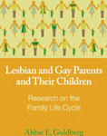
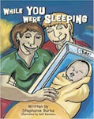

Here at Lifelong Adoptions, we wholeheartedly believe that it is our responsibility to provide our adoptive parents with as many resources as possible. In that spirit, our team of experts has put together a list of helpful reading materials for our prospective and current LGBT adoptive parents and their children.
Books for LGBT Adoptive Parents
Gay and Lesbian Parenting Choices by Brette Sember
Lesbian and Gay Fostering and Adoption edited by Stephen Hicks & Janet McDermott

Same Sex Intimacies: Families of Choice and Other Life Experiments by Jeffrey Weeks
Fatherhood For Gay Men by Kevin McGarry
21st Century Gay by John Malone
Gay Men Choosing Parenthood by Gerald P. Mallon

Lesbian and Gay Parents and Their Children: Research on the Family Life Cycle by Abbie E. Goldberg
LGBT Adoption by Frederic Miller
Adoption by Lesbians and Gay Men: A New Dimension in Family Diversity by David M. Brodzinski
The Complete Lesbian and Gay Parenting Guide by Arlene Istar Lev
A Legal Guide For Lesbian and. Gay Couples by Denis Clifford Attorney
Books for Children of LGBT Adoptive Parents
Daddy, Papa, and Me by Leslea Newman
Mommy, Mama, and Me by Leslea Newman
ABC A Family Alphabet Book by Bobbie Combs
The Family Book by Todd Parr
